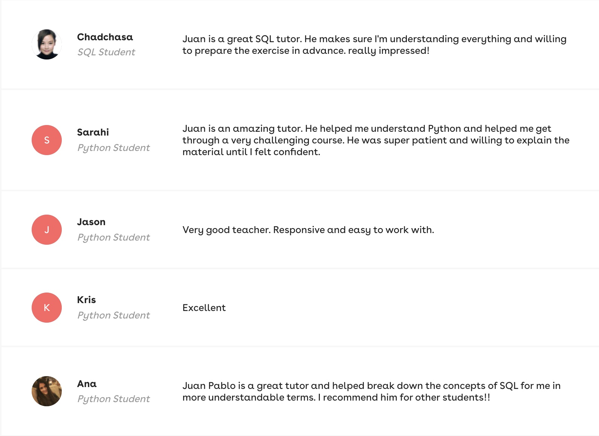

First Ten Months as an Online Programming Instructor
Nov 19, 2023
I think it runs in the family; my grandfather used to be a university professor, and so were my parents. In the summer of 2021, I interned at ID Tech, a summer coding camp where
I spent three months teaching the fundamentals of programming to students from all over the country, and I really enjoyed it. So I realized that I actually enjoy teaching. It's not
only because I find it very satisfying when a student fully grasps a concept that I explained, but also the process of explaining things out loud and iterating many times may lead you and have led me
to new insights that I might have not considered before.
In January of 2023, I decided that it was time for me to get back at online teaching, I decided to start teaching the fundamentals of programming in Python, C# and SQL.
I've had the amazing opportunity to teach over 40 students from different backgrounds and levels of expertise. I've taught graduate students how to use Pandas for data wrangling and I've also taught high school students
how to print their first "Hello World" in the console.
I see myself online teaching for the foreseeable future, at least until life becomes even more hectic. Perhaps, down the road, I'll follow my parents' footsteps and take on university-level courses.
I'll continue to enjoy and guide in any way I can these curious students who are eager to understand and learn...
These are some of the comments my amazing students have left me!
